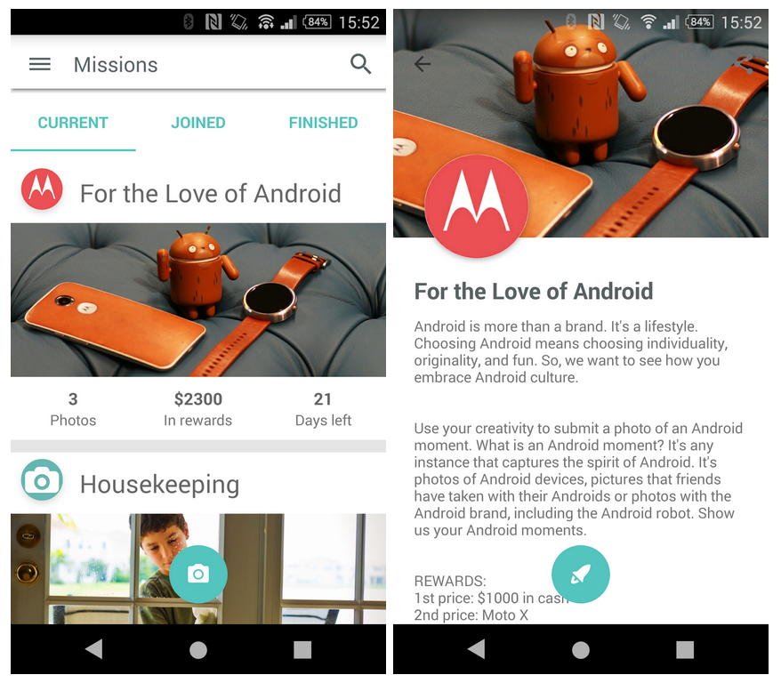
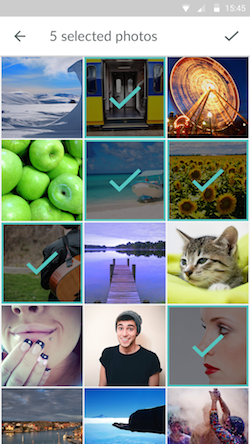

Foap 你不知道的 4 个收益暗道——新人也能拿奖金
翻了三个月 Foap App，挖出官方没说的 Premium Mission 新人暗门、Coins 免费攒法、双重收益路径和 PayPal 避汇率损耗，让每一张照片的收益翻两倍。
你以为 Foap 就是 官网 上一个拍照片五美元一张卖的 App？打开 Mission 列表点进去看两眼就退出，觉得那是品牌活动跟自己没关系？我最初也是这么想的——直到我翻遍了设置、Mission 详情页的每一个角落，才发现这个众包摄影平台藏着几条让收益翻倍的暗道，而且大部分只有深度用户才知道。
第一个暗道：Premium Mission 里的新人中奖暗门
Foap 的 Mission 分两种：Regular 和 Premium。表面看就是奖金池大小的区别，实际完全不是一回事。
Regular Mission 通常是某个品牌出钱办的活动——Motorola 要 Android 手机的照片，NIVEA 要防晒霜瓶身特写，St. Ives 要面膜产品图。提交几千份，品牌只选一张，奖金通常五百到一千美元。重点是：Regular Mission 要求你的照片里必须清晰包含品牌指定的产品，产品没拍清楚直接出局。你家没这款产品？这条 Mission 直接跳过。
Premium Mission 藏得就深了。它不要求特定品牌产品，总奖金最高两千美元，最多六十名中奖者平分。Foap 官方在一篇介绍文章里偷偷公布过一组数据：超过 60% 的 Premium Mission 中奖者是之前从未卖出过照片的新用户。这不是巧合——Premium Mission 的评审标准是照片内容质量，而不是品牌产品匹配度。新人不会因为"手里没有指定产品"而被提前淘汰。
先从下载装好 App，解锁 Premium Mission 需要 Coins 门槛，通常五十左右。但 Coins 可以看 App 内广告免费攒——每条广告给一批，看五六条就够解锁一条 Premium。完全不用花钱。

第二个暗道：一张照片卖两次的双重收益
很多人不知道：你为某个 Mission 拍的照片，提交到 Mission 之后不会从你的个人相册消失。它会同时出现在你的 Profile 和 Foap Market 里，继续等待买断。
Foap Market 的买断价格通常是五美元一张（品牌从 Market 挑片买断的话是十到六十美元）。也就是说，同一张照片你可以先提交 Mission 参与抽奖——如果 Mission 中奖了拿奖金，如果没中，Market 里还有机会被买断。Mission 提交和 Market 卖片是两条独立的收益线，互不冲突。
后来去 Foap文档 翻了一下，才看到官方只提了一句"Mission 提交的照片也可以出现在 Market 里"，没做任何强调。我第一次发现的时候感觉像捡了漏——之前都是拍了 Mission 的照片就单独存着，不敢用 Market 的照片去参与 Mission，怕影响 Mission 评审。现在知道了，完全不用担心。
第三个暗道：Coins 免费攒的广告通道在哪里
打开 Premium Mission 的详情页，解锁按钮下面有两个选项："Watch Ad for Coins" 和 "Buy Coins"。这个 "Watch Ad for Coins" 就是官方藏的免费通道——看一条 App 内广告就能拿到一批 Coins，完全免费，不用绑卡不用填信用卡信息。
问题在于，很多人第一次进 Premium Mission 页面的时候直接跳到"Buy Coins"，根本没往下滑。Foap 的 UI 设计把广告选项放在了次要位置，像是故意不让人注意到。实际操作里，五十 Coins 就能解锁一条 Premium Mission，看五六条广告就够了。我攒 Coins 的方法更简单：每天刷一两条广告，攒到三十左右就停，隔两三天再刷几条，基本不占时间。
真的不想看广告或者广告加载不出来，才考虑官方购买渠道——foap.com/coins 上有二百、六百、一千 Coins 三档，汇率大概一千 Coins 二十美元。但这个选项我到现在没用到过。

第四个暗道：PayPal 提现的汇率损耗避坑
Foap 本身在提现环节不额外收费，但你的收益到账银行之前要经过 PayPal 这一关。PayPal 作为支付管道会做货币换算，汇率通常比银行公开汇率差一到三个百分点，非美元账户每次提现都会自动吃这个损耗。
有个隐藏技巧：如果你用的是 PayPal 多币种账户，可以在设置里开启"接收美元"选项，让 Foap 发来的美元直接留在你的 PayPal 美元账户里，不自动换成人民币。这样就绕开了 PayPal 自动换算的那一步汇率损耗。之后你想用别的方式把美元换成本币，或者直接在境外消费，都比让 PayPal 帮你换划算。
没有多币种账户的话，就老老实实接受汇率损耗——行业通用做法，所有 PayPal 用户都要承担。但知道这一点至少心里有数，不会以为是 Foap 扣了钱。
有个坑别踩：Coins 花出去就不退
Premium Mission 解锁花掉的 Coins 不能提现，没中奖也不会退回来。我见过有人一口气解锁三四条 Premium Mission，结果一条没中，几百 Coins 打了水漂。
更稳妥的做法是：每次只解锁你真正想参与的一两条 Premium Mission，认真拍、认真提交。Coins 可以慢慢攒，不急。Premium Mission 的赔率比 Regular 好得多——最多六十人中奖，而 Regular 通常只有一人——但也不是稳赢。
Foap 的收益逻辑说穿了就是：Market 卖片是基础盘，Mission 是加分项，Premium Mission 是新人最容易中高收益的入口。但这几条暗道官方都没在主界面强调，全藏在 Mission 详情页、设置、提现帮助里。把它用透了，一张照片确实能卖两次，新人也能蹭到 Mission 的奖金池。
这套资料我同步到了 GitHub、Gitee 和 GitCode，国内访问推荐走 Gitee 或 GitCode，海外直接用 GitHub，内容一样但镜像源不同。